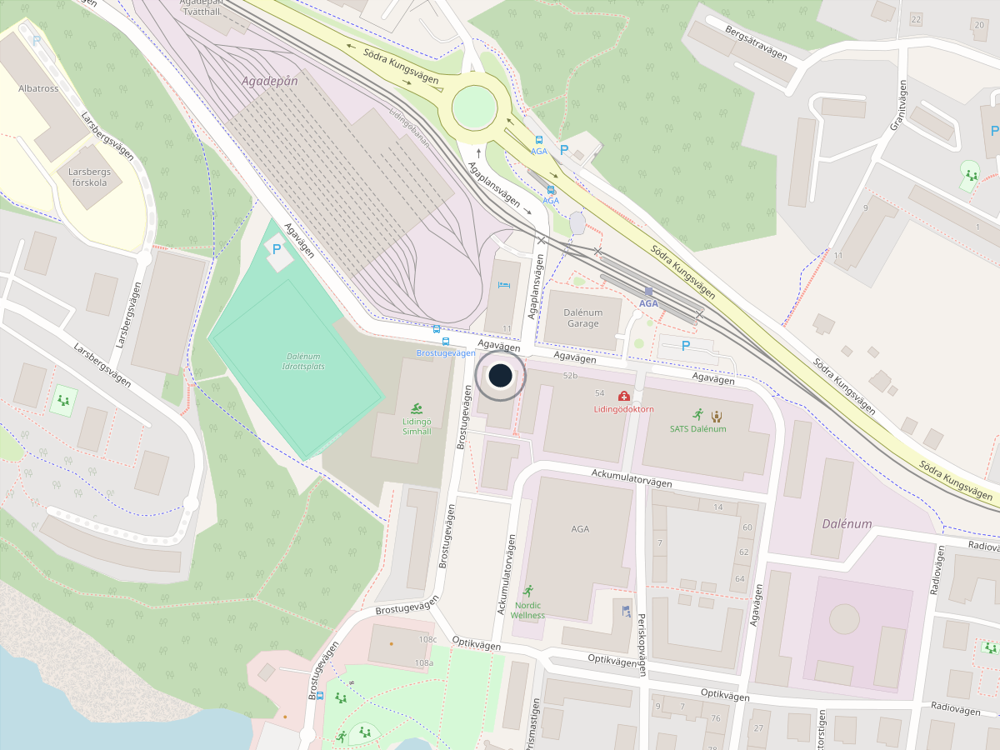

Välkommen till oss.
Ring, mejla eller kom förbi kliniken i Dalénum på Lidingö.
Besöksadress
Dalénum Veterinärklinik
Agavägen 50
181 55 Lidingö
Öppettider
- Mån–Tors08.00–17.00
- Fredag08.00–16.30
Telefon
Akut sjukt djur? Om ditt djur är akut sjukt och behöver hjälp direkt ber vi dig att ringa oss innan du kommer till kliniken, så att vi kan ta emot er på bästa sätt och så snabbt som möjligt.
Hitta hit
Mitt i Dalénum.
Kliniken ligger på Agavägen 50 i Dalénum på Lidingö.
Parkering, kollektivtrafik och entré beskrivs här. Text kommer från kliniken
